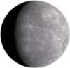

Mercury
Mercury is the First planet from the Sun in Your Solar System. It is a very small planet, a little smaller than Earth's moon. The Sun appears more than three times as large as it does when viewed from Earth, and the sunlight is as much as seven times brighter. Mercury is not the hottest planet in Your Solar System – that title belongs to nearby Venus, thanks to its dense atmosphere. Mercury has no moons.